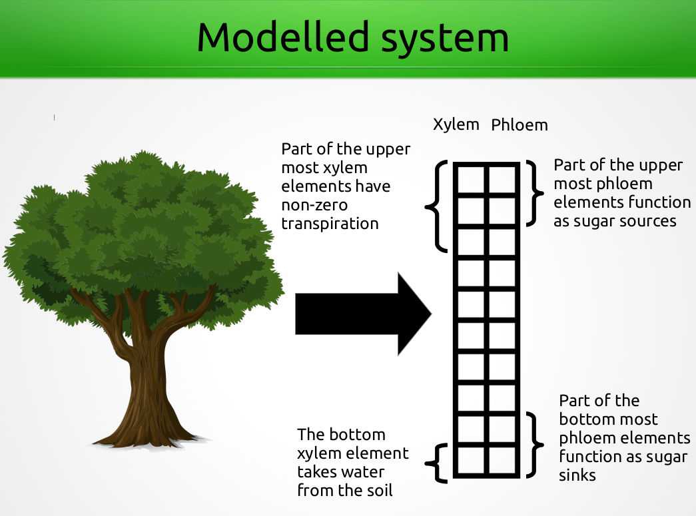
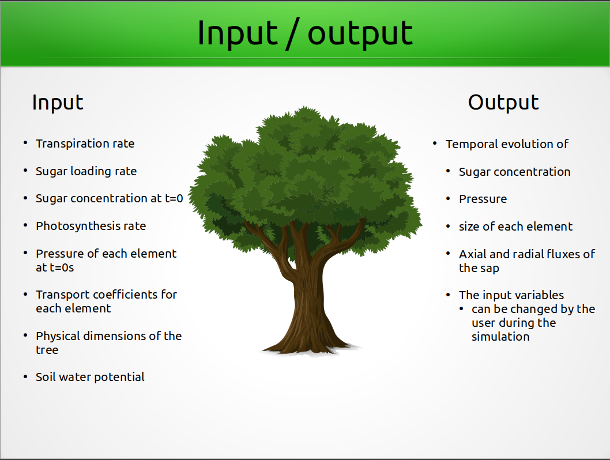
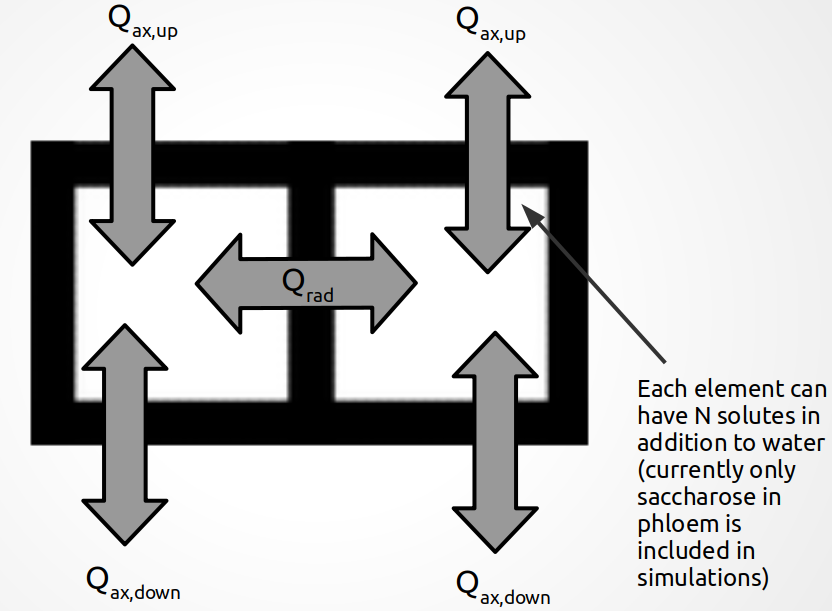
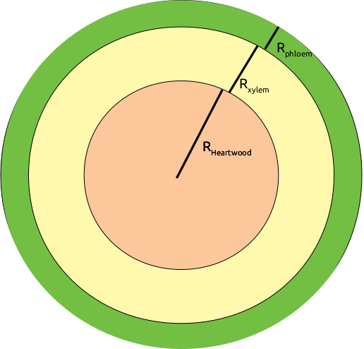

Description of the modelled system¶
Introduction¶

Modelled system is a 2-dimensional array representation of a tree. Each property of the tree is saved in a NumPy array. The first column in each array represents values of the xylem and the second column values of the phloem. The rows of the arrays represent vertical elements in the tree. The height of an element (li) is calculated from the input total tree height (H) and number of elements (N)
$$l_i = \frac{H}{N}$$
The height of an element does not change during the simulation.
The row numbering of the arrays starts from the top of the tree (i=0) and ends in the bottom of the tree (i=N).
The number of elements that transpire, produce or unload sugar can be changed by the user. Currently only the bottommost element takes up water from the soil. The model is build with the idea, that the sap in both xylem and phloem can contain any number of soluts. However, currently functionality to set, retrieve and update solutes is limited only to sugar (sucrose) in the phloem.
Input and output of the model¶

See instructions how to run the model how to give the input to the model.
The fluxes inside the tree¶

The fluxes shown in the figure above are calculated as follows (the index i refers to rows in any 2D property array in the model). The fluxes are in the units (kg/s)
$$ Q_{ax,i} = Q_{ax,bottom,i} + Q_{ax,top,i} - E_i$$
$$ Q_{ax,bottom,i} = \frac{k_i \: A_{ax,i} \: \rho_w}{\eta_i \: l_i}(P_{i+1} - P_{i} - P_h) $$
$$ Q_{ax,top,i} = \frac{k_i \: A_{ax,i+1} \: \rho_w}{\eta_i \: l_i}(P_{i-1} - P_{i} + P_h) $$
$$ Q_{radial,phloem} = L_r A_{rad,i} \rho_{w} [P_{i,xylem} - P_{i,phloem} - \sigma(C_{i,xylem} - C_{i,phloem}) R T)] $$
$$ Q_{radial,xylem} = -Q_{radial,phloem} $$
where
Ei: transpiration rate of the ith element (kg/s)
ki: axial permeability of the ith element (m2)
Aax,i: base surface area of xylem or phloem (m2)
ρw: liquid phase density of water (kg/m3)
η: viscosity of the sap in the ith element (Pa s)
li: length (height) of the ith element (m)
Pi: Pressure in the ith element (Pa)
Ph: Hydrostatic pressure (Pa) - Ph = ρw agravitation li
Lr: radial hydraulic conductivity (m/Pa/s)
Arad,i: lateral surface area of the xylem (m2)
σ: reflection coefficient (Van’t hoff factor) (unitless)
Ci: sugar concentration in the ith element (mol/m3)
R: universal gas constant (J/K/mol)
T: ambient temperature (K)
The change of pressure, sugar concentration and element radius due to sap flux¶
The equations are calcualted based on Hölttä et al., (2006)
The change of pressure in the xylem and the phloem due to sap flux is calculated separately for both horizontal elements according to
$$ \frac{\text{d}P_i}{\text{d}t} = \frac{\varepsilon_i}{V_i \rho_w}(Q_{ax,i}+Q_{rad,i}) $$
The change in sugar concentration in the phloem is calculated according to
$$ \frac{\text{d}C_i}{\text{d}t} = \frac{Q_{ax,i}}{V_i} \left(\frac{C_i}{\rho_w} + L_i + U_i \right) $$
The change in element radius in the xylem is calculated according to
$$ \frac{\text{d}R_{xylem,i}}{\text{d}t} = \frac{Q_{ax,i} + Q_{rad,i}}{2 \pi \rho_w l_i (R_{xylem,i}+R_{heartwood})} $$
The change in element radius in the phloem is calculated according to
$$ \frac{\text{d}R_{i,phloem}}{\text{d}t} = \frac{Q_{ax,i} + Q_{rad,i}}{2 \pi \rho_w l_i} \left( \frac{1}{\Sigma_{j=1}^3 R_{j,i}} - \frac{R_{phloem,i}}{(\Sigma_{j=1}^2 R_{j,i})(\Sigma_{j=1}^3 R_{j,i}} \right) $$
where the sum goes from j=1 (the heartwood) to j=3 (the phloem)
ϵi: elastic modulus of the ith element (Pa)
Vi: volume of the ith element (m3)
Li: sugar loading rate of the ith element (mol/s)
Ui: sugar unloading rate of the ith element (mol/s)
ρw: liquid phase density of water (kg/m3)
li: length (height) of the ith element (m)
Ci: Sucrose concentration in the ith element (mol/m3)
Qax/rad,i: axial or radial sap flux of the ith element (kg/s)
Ri: radius of the ith element (m)
Pi: pressure in the ith element (Pa)
Sugar loading and unloading rates¶
Currently in the model the sugar loading rate should be set equal to the photosynthesis rate when the tree is created.
The initial unloading rate needs to be set but it is updated according to Nikinmaa et. al., (2014)
$$ U_i = A_{rad,i} \max{ [0, u_s (C_i - C_0)]}$$
where
Arad,i: radial surface area between the xylem and the phloem (i.e., lateral area of the xylem)
us: sugar unloading slope set
Ci: sugar concentration in the ith element
C0: sugar target concentration
How the element radii are modelled¶

The radius of each horizontal element (heartwood, xylem and phloem) are given as the width of the element. For example, given total tree diameter of 10 cm, heartwood radius of 2 cm and 90/10% split between the phloem and the xylem. The traditional radii of each element (distance from the pith) would be
Heartwood: 2 cm
Xylem: 4.7 cm
Phloem 5 cm
In the model the radiis are given as the width of the horizontal element, i.e.:
Heartwood: 2 cm
Xylem: 2.7 cm
Phloem: 0.3 cm